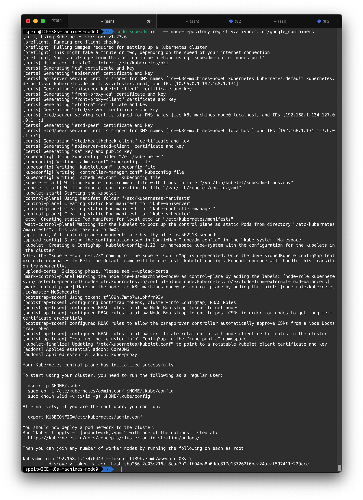
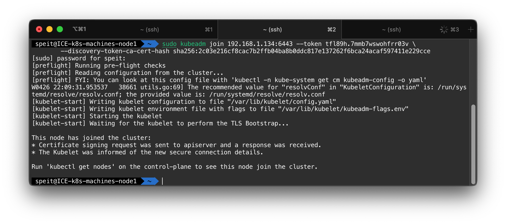
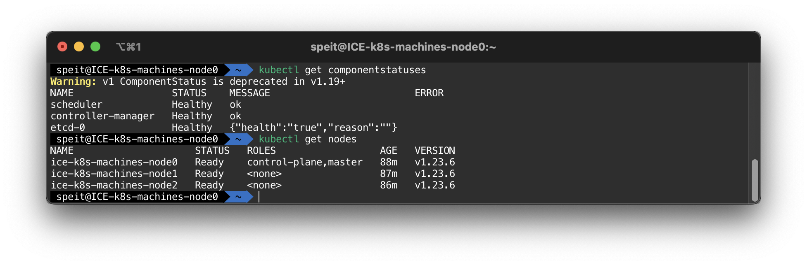
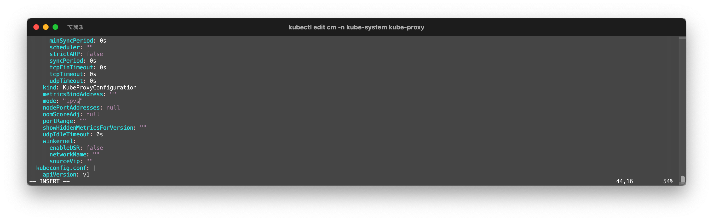
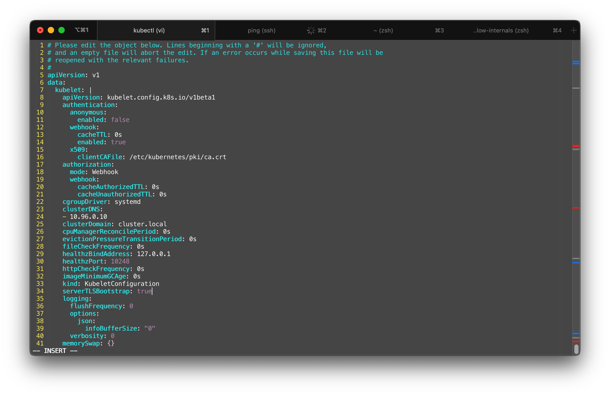
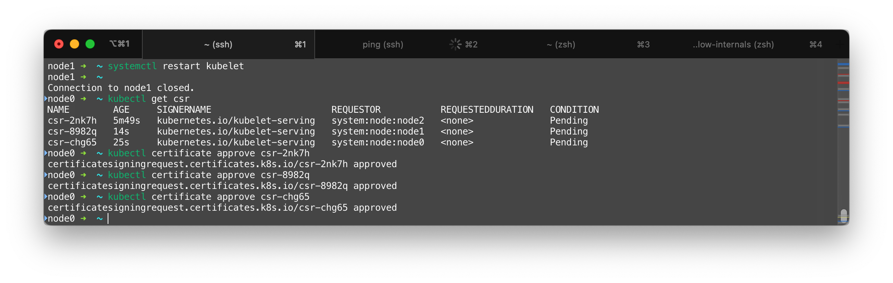

创建高可用的K8S集群
本章节记录了一个有3个节点的K8S集群的配置过程
总结
对于K8S这个快速发展的项目，如果不注意参考资料的版本，是要吃大亏的
| Component | Verison | Ref |
|---|---|---|
| kubeadm | 1.23.6 | --- |
| kubectl | 1.23.6 | --- |
| kubelet | 1.23.6 | --- |
| metrics-server | 0.6.1 | --- |
| calico | 3.22.2 | --- |
确保服务器资源
本小节描述了集群资源的情况
服务器配置
我们假设有三台互相连接的节点，这些节点在一个交换机域下。三个节点的主机名、IP地址描述如下
graph LR
B[Internet] --> A[(vSwitch<br>192.168.1.0/24)]
subgraph Hypervisor
direction TB
A --> C1[ICE-k8s-machines-node0<br>192.168.1.134]
A --> C2[ICE-k8s-machines-node1<br>192.168.1.135]
A --> C3[ICE-k8s-machines-node2<br>192.168.1.136]
endnodes:
- node0:
hostname: 'ICE-k8s-machines-node0'
address: '192.168.1.134'
- node1:
hostname: 'ICE-k8s-machines-node1'
address: '192.168.1.135'
- node2:
hostname: 'ICE-k8s-machines-node2'
address: '192.168.1.136'
三台节点均为x86虚拟机，安装Ubuntu 20.04.3 LTS操作系统，配置了2GB内存。node0将作为控制平面所在的节点
Note
必须确保product_uuid的唯一性，可以用sudo cat /sys/class/dmi/id/product_uuid检查
Tip
hostnamectl 可以修改主机名
Note
为了访问节点，我们在所有节点上部署统一的基于公私钥的免密登陆，命令参考:
令服务器互相连接
我们编辑节点的/etc/hosts 来让它们能够通过主机名互相访问。节点0上的配置如下：
127.0.0.1 localhost
127.0.1.1 ICE-k8s-machines-node0
192.168.1.134 ICE-k8s-machines-node0
192.168.1.135 ICE-k8s-machines-node1
192.168.1.136 ICE-k8s-machines-node2
Tip
可以通过ping命令来测试主机间的连通性
Tip
应当使用ifconfig配置static IP，并使得节点间可以通过默认路由通讯
Note
确保br_netfilter模块已经加载。可以通过lsmod | grep br_netfilter检查。使用sudo modprobe br_netfilter主动加载
Warning
如果是复制的虚拟机，则必须确保三台主机的MAC地址的唯一性，可以用ip link或者ifconfig -a获取mac地址。
安装Docker
我们在所有节点安装Docker。这一部分参照github.com/davidliyutong/ICE6405P-260-M01
[speit@all] $ curl -fsSL https://get.docker.com -o get-docker.sh
[speit@all] $ sudo sh get-docker.sh
[speit@all] $ sudo usermod -aG docker $USER
[speit@all] $ newgrp docker
[speit@all] $ sudo systemctl restart docker
关闭防火墙和swap
关闭ufw、SELinux等所有的防火墙，但是不要关闭iptables，因为iptables会被用来作流量转发
Tip
使用sudo ufw disable关闭ufw防火墙
修改/etc/stab，将/swap有关的配置注释从而关闭swap。
Note
swapoff -a可以临时做到这一点6443端口被用来作集群间通讯，需要确保不被占用。使用lsof -i | grep 6443确认，如果没有结果则为不占用
安装相关工具
我们需要安装以下工具：
cfssl/cfssljson: Cloudflare's SSL toolkubectl: 用来与集群通信的命令行工具kubeadm: 用来初始化集群的指令kubelet: 在集群中的每个节点上用来启动 Pod 和容器等
cfssl/cfssljson
cloudflare/cfssl仓库提供了编译好的二进制下载。以安装v1.6.1为例：
[speit@node0] $ wget https://github.com/cloudflare/cfssl/releases/download/v1.6.1/cfssl_1.6.1_linux_amd64 \
-O cfssl
[speit@node0] $ wget https://github.com/cloudflare/cfssl/releases/download/v1.6.1/cfssljson_1.6.1_linux_amd64 \
-O cfssljson
Warning
这里下载的是针对linux/amd64平台的二进制工具，如果平台不同则需要修改
使用install命令安装这些工具
[speit@all] $ sudo install ./cfssl /usr/local/bin/
[speit@all] $ sudo install ./cfssljson /usr/local/bin/
Note
这些工具可以不必安装在集群的节点上，而是可以部署在本地。证书生成后，再将其上传
kubectl / kubeadm / kubelete
安装必要的工具（理论上kubectl只需要在主节点/控制平面所在节点进行）
[speit@all] $ sudo apt-get update
[speit@all] $ sudo apt-get install -y apt-transport-https ca-certificates curl
添加仓库签名密钥
[speit@all] $ sudo curl -fsSLo /usr/share/keyrings/kubernetes-archive-keyring.gpg \
https://mirrors.aliyun.com/kubernetes/apt/doc/apt-key.gpg
Tip
删除/usr/share/keyrings/kubernetes-archive-keyring.gpg可以删除该密钥
添加仓库
[speit@all] $ echo "deb [signed-by=/usr/share/keyrings/kubernetes-archive-keyring.gpg] https://mirrors.aliyun.com/kubernetes/apt/ kubernetes-xenial main" | sudo tee /etc/apt/sources.list.d/kubernetes.list
Tip
删除/etc/apt/sources.list.d/kubernetes.list文件可以删除该仓库
[speit@all] $ sudo apt-get update
[speit@all] $ sudo apt-get install -y kubelet kubeadm kubectl
[speit@all] $ sudo apt-mark hold kubelet kubeadm kubectl
指定版本
Note
锁定版本可以避免一些兼容性问题
二进制安装工具
Note
这不等同于二进制安装集群
也可以用二进制安装kubeadm、kubectl和kubelet的指定版本。参考install-kubeadm
安装集群
本小节描述了安装集群的情况
安装控制平面/主节点
由于网络建设的原因，k8s.gcr.io在国内访问速度极慢，需要配置镜像加速。
sudo kubeadm init --image-repository registry.aliyuncs.com/google_containers \
--apiserver-advertise-address $IP \
--pod-network-cidr=10.233.0.0/16 \
Note
registry.aliyuncs.com/google_containers这个Repo其实是一个用户同步的。本人也同步了部分google的镜像源于registry.hub.docker.com/davidliyutong，可以使用这个源替换
--apiserver-advertise-address为证书IP，最好设成节点的公网IP以便远程访问--pod-network-cidr为Pod分配CIDR，不能和主机的任何子网冲突
Tip
kubeadm config images pull --image-repository registry.aliyuncs.com/google_containers可以提前拉取镜像
Note
如果出现报错：cgroup不一致，则需要添加"exec-opts": ["native.cgroupdriver=systemd"]到/etc/docker/daemon.json
令Docker以systemd为cgroup driver（kubelete的默认设置）
Warning
如果安装中出现错误，则需要执行kubeadm reset重置集群

添加其他节点
在其他节点上运行kubeadm加入集群
192.168.1.134为主节点IP6443为默认端口$TOKEN为之前主节点初始化后输出的token$HASH为之前主节点初始化后输出的hash
Note
token会在24小时后过期，因此需要及时执行节点加入操作，超时则需要重新生成token
生成token的命令
生成cat-cert-hash的命令（需要在控制平面节点执行）

根据提示，如果要以普通用户的身份使用集群，需要执行下列函数将admin.conf拷贝到用户的当前目录下，并赋予正确的权限
[speit@node0] $ mkdir -p $HOME/.kube
[speit@node0] $ sudo cp -i /etc/kubernetes/admin.conf $HOME/.kube/config
[speit@node0] $ sudo chown $(id -u):$(id -g) $HOME/.kube/config
[speit@node0] $ echo "export KUBECONFIG=$HOME/.kube/config" >> $PROFILE
Note
$PROFILE为终端的配置文件，例如ZSH的配置文件为$HOME/.zshrc
如果是root用户，则需要执行以下命令
配置网络
本次安装的calico版本是v3.22.2
现在，kubectl get nodes应该能看到所有的node，但他们没有Ready，这是因为没有配置网路插件
下载并应用calico网络插件
Note
网上有各种参考Installing Calico for policy and networking的博客认为需要执行sed -i -e "s?192.168.0.0/16?$POD_CIDR?g" calico.yaml将IP替换，实测最新版是不需要的。只要在kubeadm初始化的时候指定了--pod-network-cidr=x.x.x.x/y
可以安装calicoctl这个二进制工具
[speit@node0] $ curl -L https://github.com/projectcalico/calico/releases/download/v3.22.2/calicoctl-linux-amd64 -o calicoctl
[speit@node0] $ sudo install calicoctl /usr/local/bin
calicoctl node status可以查看节点的状态
[speit@node0] $ calicoctl node status
Calico process is running.
IPv4 BGP status
+--------------+-------------------+-------+----------+-------------+
| PEER ADDRESS | PEER TYPE | STATE | SINCE | INFO |
+--------------+-------------------+-------+----------+-------------+
| 10.64.13.11 | node-to-node mesh | up | 07:39:33 | Established |
| 10.64.13.12 | node-to-node mesh | up | 07:39:32 | Established |
+--------------+-------------------+-------+----------+-------------+
IPv6 BGP status
No IPv6 peers found.
Warning
如果系统中有NetworkManager（例如Ubuntu），需要配置NetworkManager以免对calico产生干扰。最佳实践是使用apt-get remove network-manager卸载
Note
删除calico需要以下步骤
kubectl delete -f calico.yaml可以删除calico的部署- 删除节点的tunl0设备
modprobe -r ipip - 删除
/etc/cni/net.d/下所有calico相关的文件，这是删除CNI插件 - 所有节点重启kubelet，
systemctl restart kubelet - 删除coredns的pod，
kubectl delete pod coredns-xxxxxxxxx-xxxxx
测试

其他的实用配置
RBAC
使用kubeadm搭建的集群默认开启RBAC
使用配置文件初始化
kubeadm config print init-defaults > configfile.yaml可以讲kubeadm的默认配置保存到一个configfile.yaml。修改这个文件，然后从配置文件初始化集群，可以加入很多自定义的配置
开启IPVS
官方文档说明，IPVS能够支持更大的K8S规模，带来更低的网络延时。
首先，确保有关的内核模块已经加载
确保结果中存在 ip_vs、ip_vs_rr、ip_vs_wrr、ip_vs_sh、nf_conntrack
如果没有，则加载相关模块
sudo modprobe -- ip_vs
sudo modprobe -- ip_vs_rr
sudo modprobe -- ip_vs_wrr
sudo modprobe -- ip_vs_sh
sudo modprobe -- nf_conntrack
Note
将这些modprobemingling添加进/etc/rc.local以使能开机加载
新版内核默认加载这些模块
Warning
早期的kube-proxy对nf_conntrack_ipv4有强制要求
安装ipvsadm和ipset
修改mode的值为ipvs

获取kube-proxy的Pod
kubectl get pods -n kube-system | grep proxy
kube-proxy-4cwj7 1/1 Running 1 (156m ago) 27h
kube-proxy-7pkpb 1/1 Running 1 (156m ago) 27h
kube-proxy-9r4hn 1/1 Running 1 (156m ago) 27h
通过删除Pod，令其自动重启（kube-proxy并不会被真正删除）
kubectl delete pod -n kube-system kube-proxy-4cwj7
kubectl delete pod -n kube-system kube-proxy-7pkpb
kubectl delete pod -n kube-system kube-proxy-9r4hn
重启后，kube-proxy会自动侦测K8S集群的配置模式，并工作在IPVS模式下
启用TLSBootstrap
安装metrics-server时候可能会遇到metrics-server启动但是不可用的问题，这是因为metrics-server默认会检查worker节点的InternalIP是否与节点证书匹配，而节点签发证书的时候只包含了自身的主机名。解决方法就是启用TLSBootstrap
参考证书签名请求我们需要修改kubeadm的ConfigMap，使用kubectl get cm -n kube-system获取kube-system命名空间下的ConfigMap
[node0] $ kubectl get cm -n kube-system
NAME DATA AGE
calico-config 4 8h
coredns 1 9h
extension-apiserver-authentication 6 9h
kube-proxy 2 9h
kube-root-ca.crt 1 9h
kubeadm-config 1 9h
kubelet-config-1.23 1 9h
修改ConfigMap
将会打开一个VI编辑器供修改

在data.kubelet下，添加serverTLSBootstrap: true键值对
修改所有节点的/var/lib/kubelet/config.yaml，进行同样的改动，然后重启kubelet
在控制平面节点上，使用kubectl get csr查看APIServer得到的CSR申请
[node0] $ kubectl get csr
NAME AGE SIGNERNAME REQUESTOR REQUESTEDDURATION CONDITION
csr-2nk7h 5m49s kubernetes.io/kubelet-serving system:node:node2 <none> Pending
csr-8982q 14s kubernetes.io/kubelet-serving system:node:node1 <none> Pending
csr-chg65 25s kubernetes.io/kubelet-serving system:node:node0 <none> Pending
使用kubectl certificate approve 命令批准每一个证书

添加命令补全
如果想为kubectl添加终端的自动补全，根据使用的Shell不同可以执行如下命令
安装Helm
Helm是一种K8S包管理工具
curl -fsSL -o get_helm.sh https://raw.githubusercontent.com/helm/helm/main/scripts/get-helm-3
bash get_helm.sh
这会安装最新版本的Helm
如果想为helm添加终端的自动补全，根据使用的Shell不同可以执行如下命令
Helm不一定要安装在集群的节点上。它可以被安装在遥控集群的节点上
安装MetalLB
MetalLB为私有云搭建的K8S集群提供LoadBalance能力
首先，由于我们的集群工作在IPVS模式下，需要编辑configmap文件开启strictARP。INSTALLATION
$ kubectl edit configmap -n kube-system kube-proxy
apiVersion: kubeproxy.config.k8s.io/v1alpha1
kind: KubeProxyConfiguration
mode: "ipvs"
ipvs:
strictARP: true
wget https://raw.githubusercontent.com/metallb/metallb/v0.12.1/manifests/namespace.yaml -O namespace.yaml
wget https://raw.githubusercontent.com/metallb/metallb/v0.12.1/manifests/metallb.yaml -O metallb.yaml
apiVersion: v1
kind: ConfigMap
metadata:
namespace: metallb-system
name: config
data:
config: |
address-pools:
- name: default
protocol: layer2
addresses:
- 172.42.42.100-172.42.42.120 # Change to IP
Note
172.42.42.100-172.42.42.120 需要修改成实际的IP
珍爱生命，远离交大云
有四个坑很关键，都是和网络有关的。
- JCloud中，克隆的虚拟机内编辑
/etc/network/interface修改为固定IP后，需要卸载网卡重新安装，并在安装时固定IP，否则无法联网 - 必须给每个虚拟机都绑定一个浮动IP，校园网就行，不然容器无法访问外网（下载都不行）
- 最纸张的一点，克隆虚拟机的时候，产生的虚拟机默认安全组是default，也就是默认的一套规则，并不是源虚拟机选择的规则（这会导致calico等依赖iptables的组件直接失效）。一定要检查虚拟机安全组
- JCloud会莫名其妙组织虚拟机联网，导致SSH挂掉、
kubectl连不上。这时候需要重启虚拟机